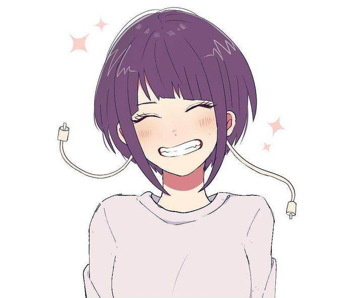
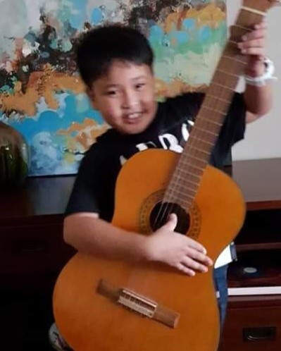

D= The problem that the institution is facing is financial problems. As they have difficulty in maintaining a sustainable way in earning funds. This is concerning as the institution depends on the money that they get from selling their products in order to support the institution.
Because of their lack of sales from their products, this causes them to not earn enough money to provide for their institution
which leads to funding/financing problems within the institution.
Our ideal situation for the institution are for them to be able to have a sustainable way of earning funds,
without having to rely on anyone else. We would also like for them to be able to improve their business tactics such as their way of promoting their website and their own products.
E- What we want to achieve is that the SAKADAB' s product and the institution itself be recognized and known for their needs.
We also want to preserve this project ours by also let them use for their needs so they can use it for their future purposes.
This way even if we are done on this project they can benefit from it and continue to preserve it which can help them to be self sufficient.
C-The possible choices/alternatives that meet the criteria is by promoting the institution and their products online such as doing posters/websites
to help and better introduce the institution to the public so a majority of people are able to familiarize and get to know the institution.
Another alternative is through starting programs that will get people to donate money to the institution in order for them to provide for the institutions needs such as getting enough funds to support for their community.
I-The best alternative is through promoting our partner institution.
Promoting their institution helps bring people to get to know the institution and their needs,
this helps them to understand the situation of the SAKADAB institution and will be able to help address their issue as well as helping them to get sales from their products in order for them to earn enough money for their institution.
D-The plan of action is going to be implemented through using social media to promote and show the products of the SAKADAB community.
Resources that are needed are going to be good internet connection, wide social media platforms like facebook, instagram etc.
E- The things that can go wrong with the project is that, the activities we do wouldn't be able to gather enough attention to provide enough
attention to both the Institution and their products. Which would not only make our project deem unsucessful but would also
stop our partnered institutiton to grow and reach their goal which is to become a self sustainable training center.
Gabriel Luis L. Royo is the Group Leader for Group 3A, he's also a club member of Ateneo Society of Computer Enthusiats. He enjoys reading mangas, lightnovels and enjoys watching anime in his free time. He's quite lazy and would prefer to just stay at home and do his own thing rather than going outside, but he's still diligent in doing his chores and his tasks.
John Brendan Alpapara
Web Designer for S.I.P
John is a very kind, caring and understanding person. He is also very sporty and loves to be with his friends all the time. He's a very obedient and outgoing both as a son and a brother. He really loves to travel with his family and friends, and lastly he is very friendly to everyone around him.

Shane Thea Tapdasan
Web Designer for Background
Shane is a very understanding, kind, and hardworking person. She appreciates spending time with her friends and is a very caring person towards them. Lastly she enjoys quality time with her family and is very thoughtful.

Troy John Maban
Webpage Designer for M.A.P.E.H
Troy is a very obedient boy to his mother and a caring big bro to his lil siblings. But he is not perfect, and has flaws as well as he also acts violent and solve problems with violence but he always tries to control it. Lastly Troy likes watching anime and tiktok and also love playing online games with his friends.